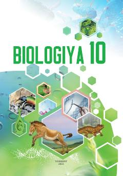

B110-sinf o'quvchilari uchun molekulyar biologiya va genetika asoslariga bag'ishlangan darslik.
Mazkur darslik 10-sinf o'quvchilari uchun mo'ljallangan bo'lib, molekulyar biologiya, hujayra biologiyasi, hayotiy jarayonlar hamda irsiyat va o'zgaruvchanlik asoslarini o'rgatadi. Kitobda mavzularga oid amaliy mashg'ulotlar, laboratoriya ishlari va masalalar yechish usullari batafsil keltirilgan.